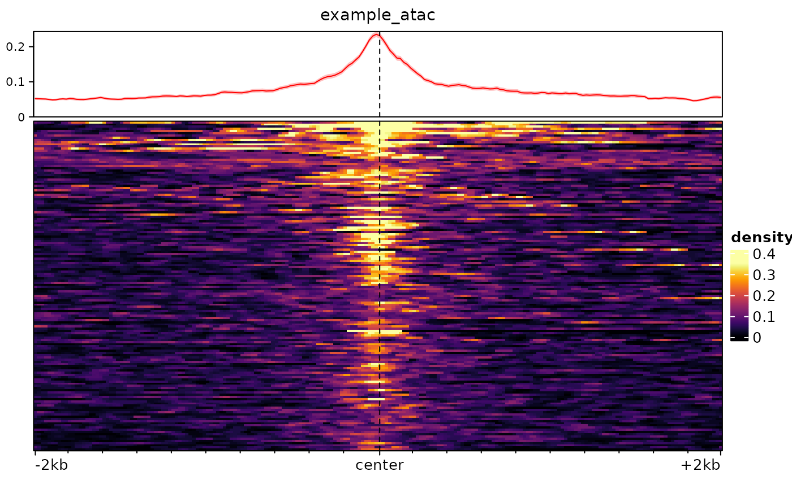
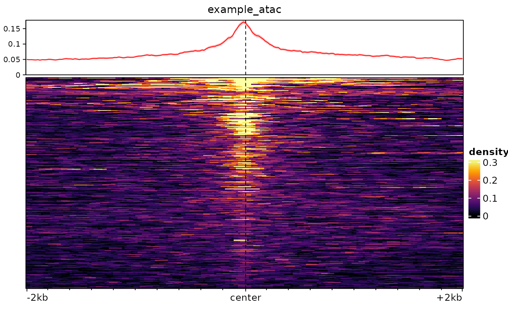

signal2Matrix: reads the signals in/around a set of genomic regions.
signal2Matrix.RdReads the signals from bam/bigwig files within and/or around (the centers of) a set of regions, and outputs an EnrichmentSE object.
Arguments
- filepaths
A named vector of filepaths (e.g. to bigwig files; bam files are also supported, but with limited functionalities). Can also be a named list including a combination of paths to such files and `GRanges` object. For `GRanges` objects, the `score` column will be used (absolute coverage mode).
- regions
A `GRanges` of the regions/positions around which to plot, or the path to a bed file of such regions. If `type="scaled"`, `regions` can also be a `GRangesList`, in which case the coverage of the subregions will be stiched together (e.g. for plotting exonic signal over transcripts).
- extend
Number of basepair to extend on either side of the regions. Must be a multiple of `w`. Can also be an integer of length 2, indicating the extension upstream and downstream.
- w
Bin width in number of nucleotides. Defaults to a width producing 200 bins over the whole extended range.
- scaledBins
The number of bins for the scale region (ignored if `type="center"`)
- type
Either 'center' (plots fixed-size region around the centers of `regions`) or 'scaled' (scales the signal in `regions` and plot surroundings)
- binMethod
Whether to compute the 'max' (default), 'mean' or 'min' per bin.
- BPPARAM
A
BiocParallelParamobject, or the number of threads to use to read and prepare the data. Note that the rate-limiting process is reading from disk, so unless you have an unusually fast disk, using multi-threading is actually likely to slow down rather than speed up the process.- ret
The type of output to return, either an "EnrichmentSE" object (default), or a simple list of signal matrices ("list").
- verbose
Logical; whether to print processing information
- ...
Passed to
normalizeToMatrixoras.normalizedMatrix, or tobam2bwwhen reading bam files. For example, this can be used to pass arguments to `normalizeToMatrix` such as `smooth=TRUE`.
Examples
# we fetch the path to the example bigwig file:
(bw <- system.file("extdata/example_atac.bw", package="epiwraps"))
#> [1] "/home/runner/work/_temp/Library/epiwraps/extdata/example_atac.bw"
# we load example regions:
regions <- rtracklayer::import(system.file("extdata/example_peaks.bed",
package="epiwraps"))
length(regions)
#> [1] 150
# we obtain the matrix of the signal around the regions:
m <- signal2Matrix(bw, regions)
#> Reading /home/runner/work/_temp/Library/epiwraps/extdata/example_atac.bw
# we can plot it with:
plotEnrichedHeatmaps(m)

# we could also take a broader range around the center of the regions, and
# use bigger bins:
m <- signal2Matrix(bw, regions, extend=2000, w=20)
#> Reading /home/runner/work/_temp/Library/epiwraps/extdata/example_atac.bw
plotEnrichedHeatmaps(m)
